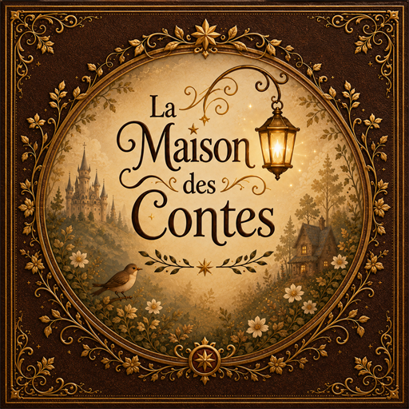
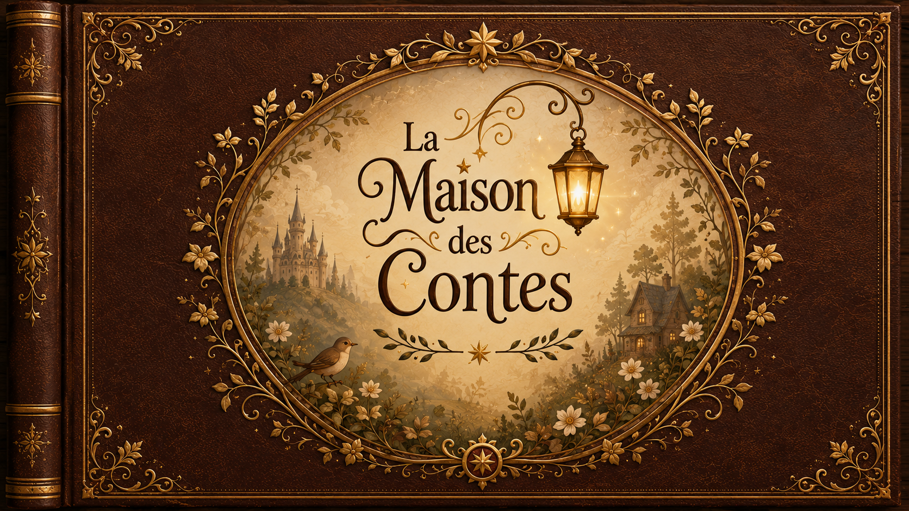
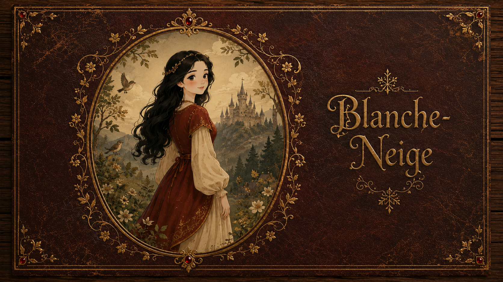
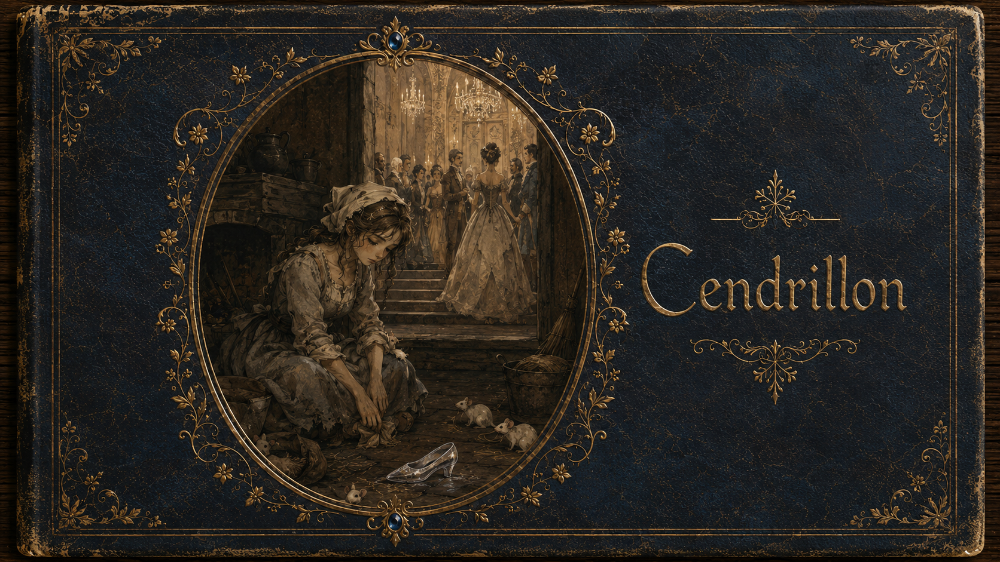
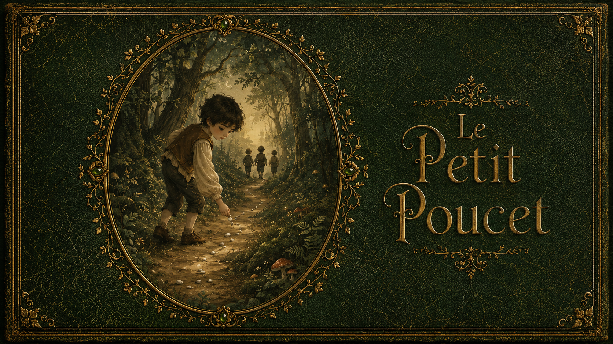
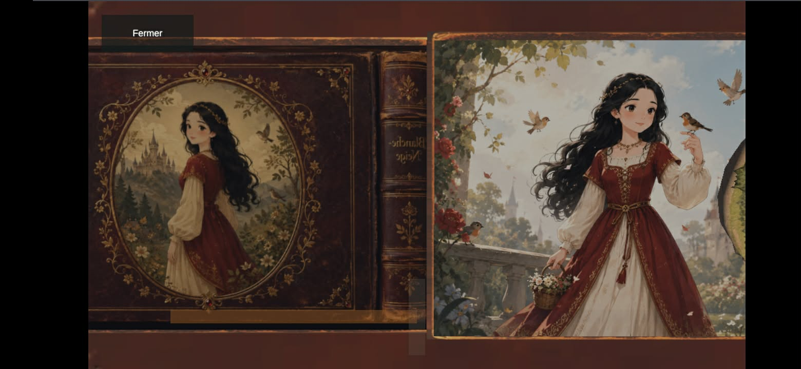
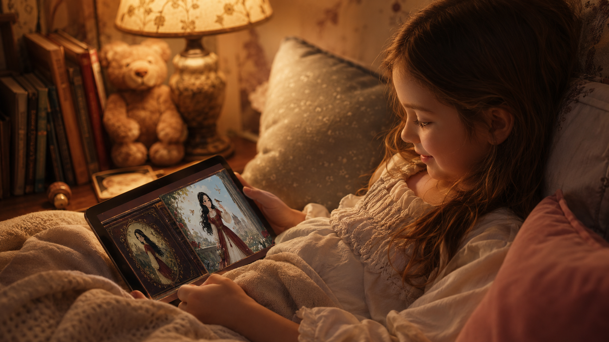
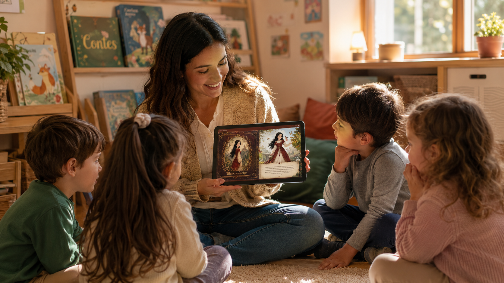
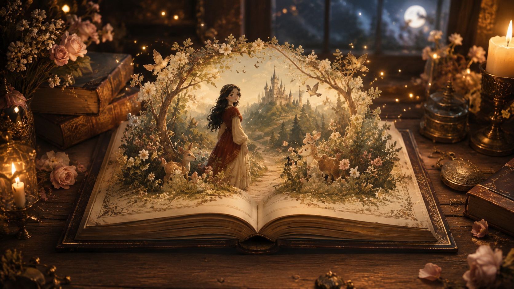

Des images qui émerveillent
De grandes illustrations riches en détails invitent à observer, raconter et rêver.

La Maison des ContesLa lecture devient magie
Des histoires illustrées, racontées et mises en musique pour transformer le coucher en un moment magique.
Plus qu’un livre
Chaque détail est pensé pour nourrir l’imaginaire sans surstimuler l’enfant.
De grandes illustrations riches en détails invitent à observer, raconter et rêver.
Voix chaleureuse, musique apaisante et rythme calme accompagnent chaque histoire.
Les scènes prennent vie avec délicatesse pour placer l’enfant au cœur du récit.
Essayez maintenant
La Maison des Contes transforme la lecture en aventure vivante. Entrez dans une bibliothèque enchantée, choisissez un livre et laissez les illustrations, la narration et la musique guider l’imagination.
Essayez-la ici, sans téléchargement. Cliquez sur la couverture puis passez en grand écran pour profiter pleinement de l’expérience.

La bibliothèque enchantée
Des classiques réinventés avec tendresse, mystère et émerveillement.

Dès 4 ansUne forêt mystérieuse, une amitié inattendue et une pomme ensorcelée.
◷ Environ 12 minutesDécouvrir ce conte →
Dès 3 ansUne nuit magique qui célèbre l’espoir, le courage et la liberté.
◷ Environ 10 minutesDécouvrir ce conte →
Dès 5 ansUn petit héros, une grande forêt et beaucoup d’ingéniosité.
◷ Environ 14 minutesDécouvrir ce conte →À vous de choisir
Explorez les trois dimensions qui rendent chaque lecture inoubliable.

Tournez les pages et laissez les illustrations raconter leur propre histoire.
À chaque moment son histoire
Des instants complices pour rêver et grandir ensemble.

Un rituel doux pour ralentir et préparer une belle nuit.

Un support vivant pour écouter, observer et échanger.

La prochaine histoire vous attend
Allumez l’imaginaire et partagez un moment que votre enfant n’oubliera pas.